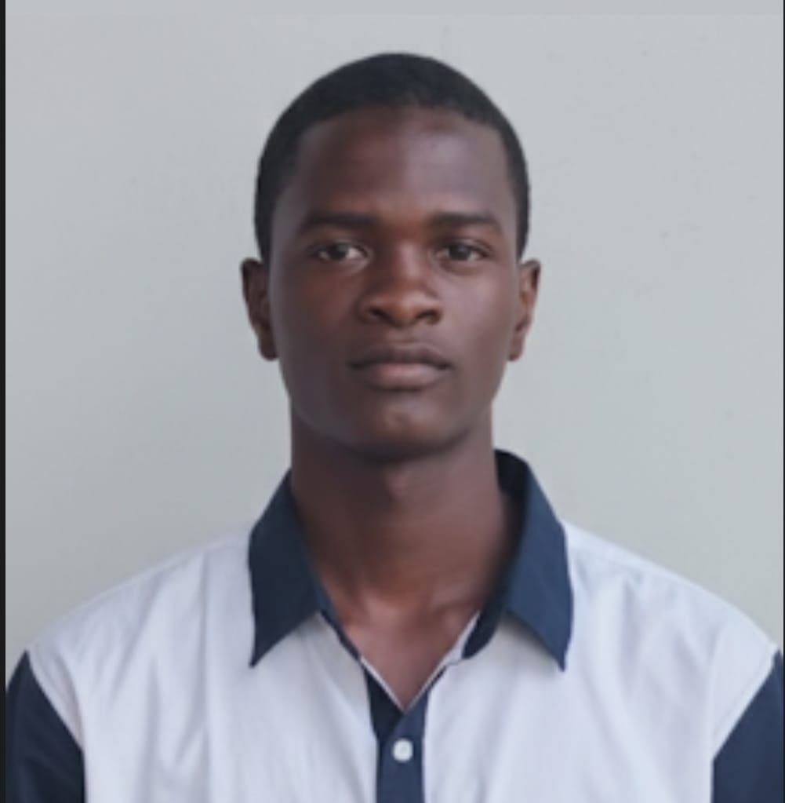

Étudiant en IRST [ABJ · 05°20′N]
Construire.
Connecter.
Évoluer.
Je suis Sanou Isaac, étudiant en Licence Réseaux & Télécommunications. Je transforme la curiosité technique en bases solides : une ligne de code, un protocole, une idée à la fois.
01 / 05 — À propos
Une curiosité en réseau.

Étudiant en Licence 3 Réseaux & Télécommunications (parcours IRST, IMERTEL) à l’Université Félix Houphouët-Boigny d’Abidjan.
Passionné par les télécommunications, l’administration réseau, les systèmes embarqués et le développement web, je m’exerce chaque jour à comprendre l’architecture des systèmes et à résoudre des problèmes concrets.
- Lieu
- Abidjan, CI
- Langues
- FR · EN
- Focus
- Réseaux · Télécoms · Systèmes
02 / 05 — Formation
Les bases avant le saut.
-
2024 — présent
Licence Réseaux & Télécommunications
Université Félix Houphouët-Boigny · UFR-SSMT · IMERTEL · Abidjan
L1, L2 puis L3 en cours, parcours IRST (Ingénierie Réseaux, Systèmes et Télécommunications).
- Programmation C
- Sockets TCP/UDP
- Télécommunications
- Linux
- Électronique numérique et analogique
- Bases de données
- Automates & langages
-
2023 — 2024
Baccalauréat scientifique, série D
Abidjan, Côte d’Ivoire
Mathématiques et sciences physiques : la première impulsion vers les systèmes et la logique.
03 / 05 — Compétences
Une boîte à outils.
Langages
- C Pratique
- Python Pratique
- HTML / CSS / JS Solide
- SQL Solide
Réseaux & systèmes
- Sockets TCP/UDP Pratique
- Linux Pratique
- Électronique Pratique
- Arduino Pratique
Outils
- Git & GitHub Pratique
- LaTeX Pratique
- Word · Excel · PowerPoint Solide
- Docker Notions
04 / 05 — Projets
Des idées en mouvement.
Avance dans le couloir : chaque baie est un projet. Clique sur une étiquette ou sur un bouton ci-dessous.
05 / 05 — Contact
Ouvrons la connexion.
Disponible pour un stage, une collaboration, un projet open source ou simplement une conversation autour de la tech.
- Emailsanouisaac225@gmail.com
- GitHubgithub.com/sanouisaac225